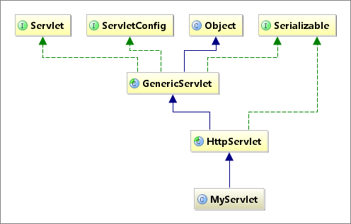
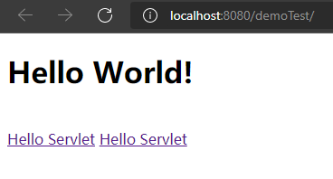
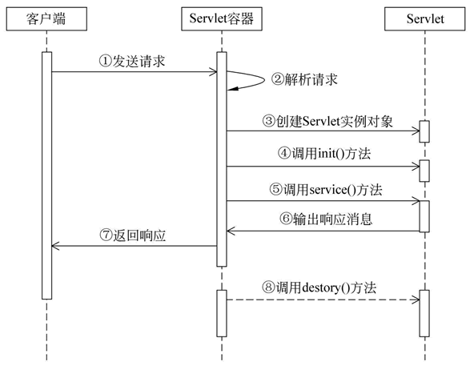

Servlet（Server Applet）是 Java Servlet 的简称，是使用 Java 语言编写的运行在服务器端的程序。具有独立于平台和协议的特性，主要功能在于交互式地浏览和生成数据，生成动态Web内容。通常来说，Servlet 是指所有实现了 Servlet 接口的类，主要用于处理客户端传来的 HTTP 请求，并返回一个响应，它能够处理的请求有 doGet() 和 doPost() 等。Servlet 由 Servlet 容器提供，Servlet 容器是指提供了 Servlet 功能的服务器（如 Tomcat），Servlet 容器会将 Servlet 动态加载到服务器上，然后通过 HTTP 请求和 HTTP 应与客户端进行交互。
Java Servlet基本认识
Servlet的应用体系为：首先 Servlet 的请求首先会被 HTTP 服务器（如 Apache Tomcat）接收，HTTP 服务器只负责静态 HTML 页面的解析，而对于 Servlet 的请求会转交给 Servlet 容器，Servlet 容器会根据 web.xml 文件中的映射关系，调用相应的 Servlet程序，Servlet 再将处理的结果返回给 Servlet 容器，并通过 HTTP 服务器将响应传输给客户端。
Servlet具有如下的特点：
1）方便
Servlet 提供了大量的实用工具例程，如处理很难完成的 HTML 表单数据、读取和设置 HTTP 头，以及处理 Cookie 和跟踪会话等。
2）跨平台
Servlet 使用 Java 类编写，可以在不同的操作系统平台和不同的应用服务器平台运行。
3）灵活性和可扩展性强
采用 Servlet 开发的 Web 应用程序，由于 Java 类的继承性及构造函数等特点，使得应用灵活，可随意扩展。
与Servlet相关的接口和类
Sun 公司提供了一系列的接口和类用于 Servlet 技术的开发，其中最重要的接口是 javax.servlet.Servlet。在 Servlet 接口中定义了 5 个抽象方法
| 方法声明 | 功能描述 |
|---|---|
| void init(ServletConfig config) | 容器在创建好 Servlet 对象后，就会自动调用此方法。该方法接收一个 ServletConfig 类型的参数，Servlet 容器通过该参数向 Servlet 传递初始化配置信息 |
| ServletConfig getSendetConfig() | 用于获取 Servlet 对象的配置信息，返回 Servlet 的 ServletConfig 对象 |
| String getServletInfo() | 返回一个字符串，其中包含关于 Servlet 的信息，如作者、版本和版权等信息 |
| void service(ServletRequest request,ServletResponse response) | 负责响应用户的请求，当容器接收到客户端访问 Servlet 对象的请求时，就会调用此方法。 容器会构造一个表示客户端请求信息的 ServletRequest 对象和一个用于响应客户端的 ServletResponse 对象作为参数传递给 service() 方法。 在 service() 方法中，可以通过 ServletRequest 对象得到客户端的相关信息和请求信息，在对请求进行处理后，调用 ServletResponse 对象的方法设置响应信息 |
| void destroy() | 负责释放 Servlet 对象占用的资源。当服务器关闭或者 Servlet 对象被移除时，Servlet 对象会被销毁，容器会调用此方法 |
在以上的五个方法中，init(), service(), destroy()方法可以表现Servlet的生命周期，会在某个特定的时期被调用
针对 Servlet 的接口，Sun 公司提供了两个默认的接口实现类：GenericServlet 和 HttpServlet。其中，GenericServlet 是一个抽象类，该类为 Servlet 接口提供了部分实现，它并没有实现 HTTP 请求处理。
Servlet的继承结构如下图所示：

HttpServlet 是 GenericServlet 的子类，它继承了 GenericServlet 的所有方法，并且为 HTTP 请求中的 GET 和 POST 等类型提供了具体的操作方法。通常情况下，编写的 Servlet 类都继承自 HttpServlet，在开发中使用的也是 HttpServlet 对象。
HttpServlet 类中包含两个常用方法：
| 方法声明 | 功能描述 |
|---|---|
| protected void doGet (HttpServletRequest req, HttpServletResponse resp) | 用于处理 GET 类型的 HTTP 请求的方法 |
| protected void doPost(HttpServletRequest req, HttpServletResponse resp) | 用于处理 POST 类型的 HTTP 请求的方法 |
HttpServlet 主要有两大功能，具体如下。
- 根据用户请求方式的不同，定义相应的 doXxx() 方法处理用户请求。例如，与 GET 请求方式对应的 doGet() 方法，与 POST 方式对应的 doPost() 方法。
- 通过 service() 方法将 HTTP 请求和响应分别强转为 HttpServletRequest 和 HttpServletResponse 类型的对象。
由于 HttpServlet 类在重写的 service() 方法中，为每一种 HTTP 请求方式都定义了对应的 doXxx() 方法，因此，当定义的类继承 HttpServlet 后，只需要根据请求方式重写对应的 doXxx() 方法即可，而不需要重写 service() 方法。
Servlet程序的简单示例
构造一个testServlet类，让其实现Servlet接口，代码如下所示：
1 | package com.example.demoTest; |
配置web.xml文件，使得 Servlet 的请求转交给 Servlet 容器，Servlet 容器会根据 web.xml 文件中的映射关系，调用相应的 Servlet程序，Servlet 再将处理的结果返回给 Servlet 容器，并通过 HTTP 服务器将响应传输给客户端。
1 |
|
配置完成后，开启服务器，访问localhost:8080端口

点击Hello Servlet链接，可以看到服务器端的init， service方法等被执行，在关闭服务后，还会调用destroy方法。
1 | init方法被调用！ |
Servlet的生命周期

按照功能的不同，大致可以将 Servlet 的生命周期分为三个阶段，分别是初始化阶段、运行阶段和销毁阶段。
初始化阶段
当客户端向 Servlet 容器发出 HTTP 请求要求访问 Servlet 时，Servlet 容器首先会解析请求，检查内存中是否已经有了该 Servlet 对象，如果有，则直接使用该 Servlet 对象，如果没有，则创建 Servlet 实例对象，然后通过调用 init() 方法实现 Servlet 的初始化工作。需要注意的是，在 Servlet 的整个生命周期内，它的 init() 方法只能被调用一次。
运行阶段
这是 Servlet 生命周期中最重要的阶段，在这个阶段中，Servlet 容器会为这个请求创建代表 HTTP 请求的 ServletRequest 对象和代表 HTTP 响应的 ServletResponse 对象，然后将它们作为参数传递给 Servlet 的 service() 方法。
service() 方法从 ServletRequest 对象中获得客户请求信息并处理该请求，通过 ServletResponse 对象生成响应结果。
在 Servlet 的整个生命周期内，对于 Servlet 的每一次访问请求，Servlet 容器都会调用一次 Servlet 的 service() 方法，并且创建新的 ServletRequest 和 ServletResponse 对象，也就是说，service() 方法在 Servlet 的整个生命周期中会被调用多次。
销毁阶段
当服务器关闭或 Web 应用被移除出容器时，Servlet 随着 Web 应用的关闭而销毁。在销毁 Servlet 之前，Servlet 容器会调用 Servlet 的 destroy() 方法，以便让 Servlet 对象释放它所占用的资源。在 Servlet 的整个生命周期中，destroy() 方法也只能被调用一次。
需要注意的是，Servlet 对象一旦创建就会驻留在内存中等待客户端的访问，直到服务器关闭或 Web 应用被移除出容器时，Servlet 对象才会销毁。
Servlet配置虚拟路径映射
创建好的 Servlet 只有映射成虚拟路径，客户端才能对其进行访问。但是在映射 Servlet 时，还存在如 Servlet 的多重映射、在映射路径中使用通配符、配置默认的 Servlet 等内容。
Servlet多重映射
Servlet 的多重映射指同一个 Servlet 可以被映射成多条虚拟路径。
有两种方法可以实现多重映射：
- 配置多个
元素； - 配置多个
子元素；
我们使用第二个方法实现多重映射：
即在web.xml中配置例如下图所示的代码：
1 | <servlet> |
配置完成后，即可通过两种URL对该servlet进行访问：
http://localhost:8080/servlet/testServlet01
http://localhost:8080/servlet/test01
Servlet映射路径中使用通配符
在实际开发过程中，开发者有时会希望某个目录下的所有路径都可以访问同一个 Servlet，这时，可以在 Servlet 映射的路径中使用通配符*。通配符的格式有两种，具体如下。
格式为
*.扩展名，例如 *.do 匹配以 .do 结尾的所有 URL 地址。格式为
/*，例如 /abc/* 匹配以 /abc 开始的所有 URL 地址。
当客户端访问一个 Servlet 时，如果请求的 URL 地址能够匹配多条虚拟路径，那么 Tomcat 将采取最具体匹配原则查找与请求 URL 最接近的虚拟映射路径。
/abc/* 映射到 Servlet1
/* 映射到 Servlet2
/abc 映射到 Servlet3
*.do 映射到 Servlet4
- 当请求 URL 为
/abc/a.html;/abc/*和/*都可以匹配这个 URL，Tomcat 会调用 Servlet1。 - 当请求 URL 为
/abc;/*、/abc/*和/abc都可以匹配这个 URL，Tomcat 会调用 Servlet3。 - 当请求 URL 为
/abc/a.do;/*、*.do和/abc/*都可以匹配这个 URL，Tomcat 会调用 Servlet1。 - 当请求 URL 为
/a.do;/*和*.do都可以匹配这个 URL，Tomcat 会调用 Servlet2。 - 当请求 URL 为
/xxx/yyy/a.do;*.do和/*都可以匹配这个 URL，Tomcat 会调用 Servlet2。
默认Servlet
如果某个 Servlet 的映射路径仅仅是一个正斜线（/），那么这个 Servlet 就是当前 Web 应用的默认 Servlet。Servlet 服务器在接收到访问请求时，如果在 web.xml 文件中找不到匹配的
下面对web.xml文件进行修改，将TestServlet01设置为默认的 Servlet，具体如下：
1 | <servlet> |
启动 Tomcat 服务器，在浏览器的地址栏中输入任意地址，如 http://localhost:8080/servletDemo01/abcde，浏览器的显示结果都将是调用TestServlet01的结果。
需要注意的是，在 Tomcat 安装目录下的 web.xml 文件中也配置了一个默认的 Servlet，配置信息如下所示：
1 | <servlet> |
在上面的配置信息中，org.apache.catalina.servlets.DefaultServlet 被设置为默认的 Servlet，它对 Tomcat 服务器上所有的 Web 应用都起作用。
当 Tomcat 服务器中的某个 Web 应用没有默认 Servlet 时，都会将 DefaultServlet 作为默认的 Servlet。当客户端访问 Tomcat 服务器中的某个静态 HTML 文件时，DefaultServlet 会判断 HTML 是否存在，如果存在，则会将数据以流的形式回送给客户端，否则会报告 404 错误。
ServletConfig和ServletContext接口及其使用方法
ServletConfig接口
在运行 Servlet 程序时，可能需要一些辅助信息，例如，文件使用的编码、使用 Servlet 程序的共享信息等，这些信息可以在 web.xml 文件中使用一个或多个
| 方法说明 | 功能描述 |
|---|---|
| String getInitParameter(String name) | 根据初始化参数名返回对应的初始化参数值 |
| Enumeration getInitParameterNames() | 返回一个 Enumeration 对象，其中包含了所有的初始化参数名 |
| ServletContext getServletContext() | 返回一个代表当前 Web 应用的 ServletContext 对象 |
| String getServletName() | 返回 Servlet 的名字，即 web.xml 中 <servlet-name>元素的值 |
例如：
Servlet代码如下，用于获得该Servlet的编码：
1 | public class TestServlet02 extends HttpServlet { |
web.xml如下所示：
1 | <servlet> |
ServletContext接口
当 Tomcat 启动时，Tomcat 会为每个 Web 应用创建一个唯一的 ServletContext 对象代表当前的 Web 应用，该对象封装了当前 Web 应用的所有信息。可以利用该对象获取 Web 应用程序的初始化信息、读取资源文件等。
1 | <context-param> |
读取全局的初始化信息：
1 | public class TestServlet03 extends HttpServlet { |
也可以用来临时存放数据：
使用setAttribute可以写入数据（保存在内存中），当web进程结束时，数据会丢失
例如：
1 | public class ServletContextTest1 extends HttpServlet{ |
也可以读取Web应用下的资源文件：
ServletContext 接口中定义了一些读取 Web 资源的方法，这些方法是依靠 Servlet 容器实现的。Servlet 容器根据资源文件相对于 Web 应用的路径，返回关联资源文件的 I/O 流或资源文件在系统的绝对路径等。
| 方法说明 | 功能描述 |
|---|---|
| Set getResourcePaths(String path) |
返回一个 Set 集合，集合中包含资源目录中子目录和文件的路径名 称。参数 path 必须以正斜线（/）开始，指定匹配资源的部分路径 |
| String getRealPath(String path) | 返回资源文件在服务器文件系统上的真实路径（文件的绝对路径）。参数 path 代表资源文件的虚拟路径，它应该以正斜线（/）开始，/ 表示当前 Web 应用的根目录，如果 Servlet 容器不能将虚拟路径转换为文 件系统的真实路径，则返回 null |
|
URL getResource(String path) |
返回映射到某个资源文件的 URL 对象。参数 path 必须以正斜线（/）开始，/ 表示当前 Web 应用的根目录 |
| InputStream getResourceAsStream(String path) | 返回映射到某个资源文件的 InputStream 输入流对象。参数 path 的传递规则和 getResource() 方法完全一致 |
例如：
/WEB-INF/classes/itcast.properties文件：
1 | username=admin |
1 | public class TestServlet04 extends HttpServlet { |
HttpServletRequest
当访问 Servlet 时，所有请求消息将被封装到 HttpServletRequest 对象中，请求消息的请求行中包含请求方法、请求资源名、请求路径等信息，为了获取这些信息，HttpServletRequest 接口定义了一系列方法。
| 方法声明 | 功能描述 |
|---|---|
| String getMethod() | 该方法用于获取 HTTP 请求消息中的请求方式（如 GET、POST 等） |
| String getRequestURI() | 该方法用于获取请求行中的资源名称部分即位于 URL 的主机和端门之后、参数部分之前的部分 |
| String getQueryString() | 该方法用于获取请求行中的参数部分，也就是资源路径后问号（？）以后的所有内容 |
| String getContextPath() | 该方法用于获取请求 URL 中属于 Web 应用程序的路径，这个路径以 / 开头，表示相对于整个 Web 站点的根目录，路径结尾不含 /。如果请求 URL 属于 Web 站点的根目录，那么返回结果为空字符串（""） |
| String getServletPath() | 该方法用于获取 Servlet 的名称或 Servlet 所映射的路径 |
| String getRemoteAddr() | 该方法用于获取请求客户端的 IP 地址，其格式类似于 192.168.0.3 |
| String getRemoteHost() | 该方法用于获取请求客户端的完整主机名，其格式类似于 pcl.mengma.com。需要注意的是，如果无法解析出客户机的完整主机名，那么该方法将会返回客户端的 IP 地址 |
| int getRemotePort() | 该方法用于获取请求客户端网络连接的端口号 |
| String getLocaIAddr() | 该方法用于获取 Web 服务器上接收当前请求网络连接的 IP 地址 |
| String getLocalName() |
该方法用于获取 Web 服务器上接收当前网络连接 IP 所对应的主机名 |
| int getLocalPort() | 该方法用于获取 Web 服务器上接收当前网络连接的端口号 |
| String getServerName() | 该方法用于获取当前请求所指向的主机名，即 HTTP 请求消息中 Host 头字段所对应的主机名部分 |
| int gctServcrPort() | 该方法用于获取当前请求所连接的服务器端口号，即 HTTP 请求消息中 Host 头字段所对应的端口号部分 |
| StringBuffcr getRequestURL() | 该方法用于获取客户端发出请求时的完整 URL，包括协议、服务器名、端口号、 资源路径等信息，但不包括后面的査询参数部分。注意，getRequcstURL() 方法返冋的结果是 StringBuffer 类型，而不是 String 类型，这样更便于对结果进行修改 |
当浏览器发送 Servlet 请求时，需要通过请求消息头向服务器传递附加信息，例如，客户端可以接收的数据类型、压缩方式、语言等。为此，在 HttpServletRequest 接口中定义了一系列用于获取 HTTP 请求头字段的方法。
| 方法声明 | 功能描述 |
|---|---|
| String getHeader(String name) | 该方法用于获取一个指定头字段的值，如果请求消息中没有包含指定的头字段，则 getHeader() 方法返回 null；如果请求消息中包含多个指定名称的头字段，则 getHeader() 方法返回其中第一个头字段的值 |
| Enumeration getHeaders(String name) |
该方法返回一个 Enumeration 集合对象，该集合对象由请求消息中出现的某个指定名称的所有头字段值组成。在多数情况下，一个头字段名在请求消息中只出现一次，但有时可能会出现多次 |
| Enumeration getHeaderNames() | 该方法用于获取一个包含所有请求头字段的 Enumeration 对象 |
| int getIntHeader(String name) | 该方法用于获取指定名称的头字段，并且将其值转为 int 类型。需要注意的是，如果指定名称的头字段不存在，则返回值为 -1；如果获取到的头字段的值不能转为 int 类型，则将发生 NumberFormatException 异常 |
| long getDateHeader(String name) | 该方法用于获取指定头字段的值，并将其按 GMT 时间格式转换为一个代表日期/时间的长整数，该长整数是自 1970 年 1 月 1 日 0 时 0 分 0 秒算起的以毫秒为单位的时间值 |
| String getContentType() | 该方法用于获取 Content-Type 头字段的值，结果为 String 类型 |
| int getContentLength() | 该方法用于获取 Content-Length 头字段的值，结果为 int 类型 |
| String getCharacterEncoding() | 该方法用于返回请求消息的实体部分的字符集编码，通常是从 Content-Type 头字段中进行提取，结果为 String 类型 |
获取表单数据
在实际开发中，经常需要获取用户提交的表单数据，例如用户名和密码等，为了方便获取表单中的请求参数，在 HttpServletRequest 接口的父类 ServletRequest 中定义了一系列获取请求参数的方法
| 方法声明 | 功能描述 |
|---|---|
| String getParameter(String name) |
该方法用于获取某个指定名称的参数值。 如果请求消息中没有包含指定名称的参数，则 getParameter() 方法返回 null。 如果指定名称的参数存在但没有设置值，则返回一个空串。 如果请求消息中包含多个该指定名称的参数，则 getParameter() 方法返回第一个出现的参数值。 |
|
String [] getParameterValues (String name) |
HTTP 请求消息中可以有多个相同名称的参数（通常由一个包含多个同名的字段元素的 form 表单生成），如果要获得 HTTP 请求消息中的同一个参数名所对应的所有参数值，那么就应该使用 getParameterValues() 方法，该方法用于返回一个 String 类型的数组。 |
| Enumeration getParameterNames() | 方法用于返回一个包含请求消息中所有参数名的 Enumeration 对象，在此基础上，可以对请求消息中的所有参数进行遍历处理。 |
| Map getParameterMap() | getParameterMap() 方法用于将请求消息中的所有参数名和值装入一个 Map 对象中返回。 |
1 |
|
使用该 Servlet 获取请求参数：
1 | public class RequestParamsServlet extends HttpServlet { |
通过 Request 对象传递数据
Request 对象不仅可以获取一系列数据，还可以通过属性传递数据。ServletRequest 接口中定义了一系列操作属性的方法。
1）setAttribute() 方法
该方法用于将一个对象与一个名称关联后存储到 ServletRequest 对象中，其完整语法定义如下：
public void setAttribute(java.lang.String name,java.lang.Object o);
需要注意的是，如果 ServletRequest 对象中已经存在指定名称的属性，则 setAttribute() 方法将会先删除原来的属性，然后再添加新的属性。如果传递给 setAttribute() 方法的属性值对象为 null，则删除指定名称的属性，这时的效果等同于 removeAttribute() 方法。
2）getAttribute() 方法
该方法用于从 ServletRequest 对象中返回指定名称的属性对象，其完整的语法定义如下：
public java.lang.Object getAttribute(java.lang.String name);
3）removeAttribute() 方法
该方法用于从 ServletRequest 对象中删除指定名称的属性，其完整的语法定义如下：
public void removeAttribute(java.lang.String name);
4）getAttributeNames() 方法
该方法用于返回一个包含 ServletRequest 对象中的所有属性名的 Enumeration 对象，在此基础上，可以对 ServletRequest 对象中的所有属性进行遍历处理。getAttributeNames() 方法的完整语法定义如下：
public java.util.Enumeration getAttributeNames();
需要注意的是，只有属于同一个请求中的数据才可以通过 ServletRequest 对象传递数据。
请求转发
当一个 Web 资源收到客户端的请求后，如果希望服务器通知另外一个资源处理请求，那么这时可以通过 RequestDispatcher 接口的实例对象实现。ServletRequest 接口中定义了一个获取 RequestDispatcher 对象的方法：
RequestDispatcher getRequestDispatcher (String path)
该方法返回封装了某条路径所指定资源的 RequestDispatcher 对象。其中，参数 path 必须以 / 开头，用于表示当前 Web 应用的根目录。需要注意的是，WEB-INF 目录中的内容对 RequestDispatcher 对象也是可见的。因此，传递给 getRequestDispatcher(String path) 方法的资源可以是 WEB-INF 目录中的文件。
| 方法声明 | 功能描述 |
|---|---|
| forward(ServletRequest request,ServletResponse response) | 该方法用于将请求从一个 Servlet 传递给另一个 Web 资源。在 Servlet 中，可以对请求做一个初步处理，然后通过调用这个方法，将请求传递给其他资源进行响应。需要注意的是，该方法必须在响应提交给客户端之前被调用，否则将抛出 IllegalStateException 异常 |
| include(ServletRequest request,ServletResponse response) |
该方法用于将其他的资源作为当前响应内容包含进来 |
servlet01：
1 | public class RequestForwardServlet extends HttpServlet { |
servlet02：
1 | public class ResultServlet extends HttpServlet { |
HttpServletResponse
HttpServletResponse 接口继承自 ServletResponse 接口，主要用于封装 HTTP 响应消息。由于 HTTP 响应消息分为状态行、响应消息头、消息体三部分。因此，在 HttpServletResponse 接口中定义了向客户端发送响应状态码、响应消息头、响应消息体的方法。
发送状态码相关的方法
当 Servlet 向客户端回送响应消息时，需要在响应消息中设置状态码。因此，HttpServletResponse 接口定义了两个发送状态码的方法。
setStatus（int status）方法
该方法用于设置 HTTP 响应消息的状态码，并生成响应状态行。由于响应状态行中的状态描述信息直接与状态码相关，而 HTTP 版本由服务器确定，因此，只要通过 setStatus（int status）方法设置了状态码，即可实现状态行的发送。需要注意的是，在正常情况下，Web 服务器会默认产生一个状态码为 200 的状态行。
sendError（int sc）方法
该方法用于发送表示错误信息的状态码。例如，404 状态码表示找不到客户端请求的资源。response 对象提供了两个重载的 sendError（int sc）方法，具体如下：
public void sendError(int code) throws java.io.IOExceptionpublic void sendError(int code,String message)throws java.io.IOException
在上面重载的两个方法中，第一个方法只发送错误信息的状态码，而第二个方法除了发送状态码以外，还可以增加一条用于提示说明的文本信息，该文本信息将出现在发送给客户端的正文内容中。
发送响应消息头相关的方法
Servlet 向客户端发送的响应消息中包含响应头字段，由于 HTTP 协议的响应头字段有很多种，因此，HttpServletResponse 接口定义了一系列设置 HTTP 响应头字段的方法。
| 方法声明 | 功能描述 |
|---|---|
| void addHeader(String name,String value) | 这两个方法都是用于设置 HTTP 协议的响应头字段。其中，参数 name 用于指定响应头字段的名称，参数 value 用于指定响 应头字段的值。不同的是，addHeader() 方法可以增加同名的响应头字段，而 setHeader() 方法则会覆盖同名的头字段 |
| void setHeader (String name,String value) | |
| void addIntHeader(String name,int value) | 这两个方法专门用于设置包含整数值的响应头，避免了使用 addHeader() 与 setHeader() 方法时需要将 int 类型的设置值转换为 String 类型的麻烦 |
|
void setIntHeader(String name, int value) |
|
| void setContentType(String type) | 该方法用于设置 Servlet 输出内容的 MIME 类型，对于 HTTP 协议来说，就是设置 Content-Type 响应头字段的值。例如，如果发送到客户端的内容是 jpeg 格式的图像数据,就需要将响应头字段的类型设置为 image/jpeg。需要注意的是，如果响应的内容为文本，setContentType() 方法还可以设置字符编码，如 text/html;charset = UTF-8 |
| void setLocale (Locale loc) | 该方法用于设置响应消息的本地化信息。对 HTTP 来说，就是设置 Content-Language 响应头字段和 Content-Type 头字段中的字符集编码部分。需要注意的是，如果 HTTP 消息没有设置 Content-Type 头字段，则 setLocale() 方法设置的字符集编码不会出现在 HTTP 消息的响应头中，如果调用 setCharacterEncoding() 或 setContentType() 方法指定了响应内 容的字符集编码，则 setLocale() 方法将不再具有指定字符集编码的功能 |
| void setCharacterEncoding(String charset) | 该方法用于设置输出内容使用的字符编码，对 HTTP 协议来说，就是设置 Content-Type 头字段中的字符集编码部分。如果没有设置 Content-Type 头字段，则 setCharacterEncoding 方法设 置的字符集编码不会出现在 HTTP 消息的响应头中。setCharacterEncoding() 方法比 setContentType() 和 setLocale() 方法的优先权高，它的设置结果将覆盖 setContentType() 和 setLocale() 方法所设置的字符码表 |
发送响应消息体相关的方法
由于在 HTTP 响应消息中，大量的数据都是通过响应消息体传递的，因此，ServletResponse 遵循以 I/O 流传递大量数据的设计理念。在发送响应消息体时，定义了两个与输出流相关的方法。
getOutputStream()方法
该方法所获取的字节输出流对象为 ServletOutputStream 类型。由于 ServletOutputStream是OutputStream 的子类，它可以直接输出字节数组中的二进制数据。因此，要想输出二进制格式的响应正文，就需要使用 getOutputStream() 方法。
getWriter()方法
该方法所获取的字符输出流对象为 PrintWriter 类型。由于 PrintWriter 类型的对象可以直接输出字符文本内容，因此，要想输出内容全部为字符文本的网页文档，则需要使用 getWriter() 方法。
注意：虽然 response 对象的 getOutputStream() 和 getWriter() 方法都可以发送响应消息体，但是，它们之间互相排斥，不可同时使用，否则会发生 IllegalStateException 异常。
重定向(页面跳转)
请求重定向指 Web 服务器接收到客户端的请求后，可能由于某些条件的限制，不能访问当前请求 URL 所指向的 Web 资源，而是指定了一个新的资源路径，让客户端重新发送请求。
为了实现请求重定向，HttpServletResponse 接口定义了一个 sendRedirect() 方法，该方法用于生成 302 响应码和 Location 响应头，从而通知客户端重新访问 Location 响应头中指定的 URL，sendRedirect() 方法的完整语法如下所示：
public void sendRedirect(java.lang.String location) throws java.io.IOException
在上述方法代码中，参数 location 可以使用相对 URL，Web 服务器会自动将相对 URL 翻译成绝对 URL，再生成 Location 头字段。
例如：
login.html:
1 |
|
welcome.html
1 |
|
创建 LoginServlet
1 | public class LoginServlet extends HttpServlet { |
乱码问题
由于未指定浏览器和服务端编码，因此可能出现乱码的情况。
request乱码
对request对象使用setCharacterEncoding()方法，指定编码，可以避免从浏览器获得的数据存在乱码现象。
在调用request的任何其他方法前，使用如下语句：
1 | request.setCharacterEncoding("utf-8"); //设置request对象的解码方式 |
response乱码
第一种方式：
1 | response.setCharacterEncoding("utf-8"); //设置 HttpServletResponse使用utf-8编码 |
第二种方式：
1 | response.setContentType("text/html;charset=utf-8"); //包含第一种方式的两个功能 |